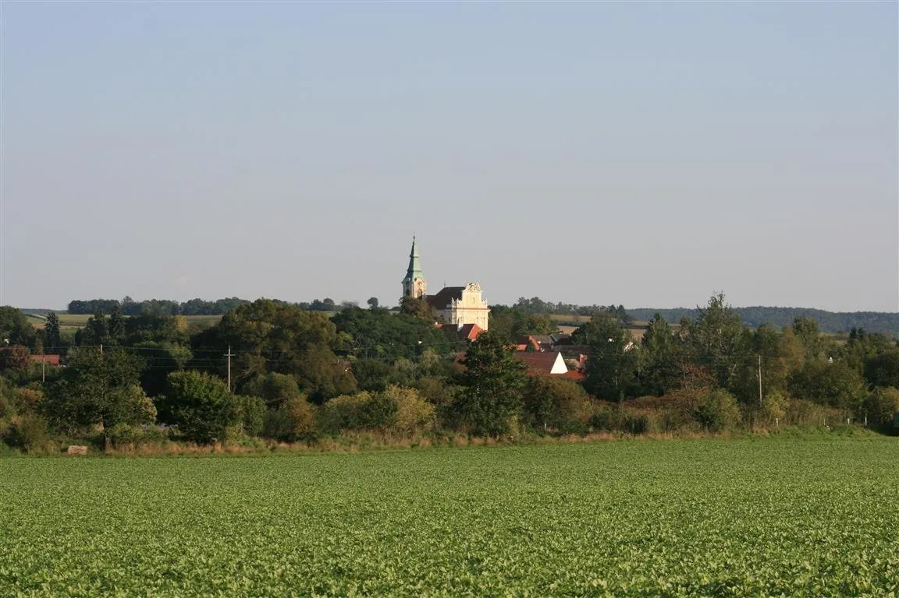

Weinviertel, Niederösterreich
Pfarre Aspersdorf
Rund drei Kilometer nördlich von Hollabrunn betreut das Augustiner-Vikariat Wien auch die Pfarre Aspersdorf mit der Pfarrkirche St. Georg — eine zweite, eigenständige Gemeinde im Weinviertel.
Leitung der Pfarre
Die Pfarre Aspersdorf wird seit 2002 von P. Mag. Dominic Sadrawetz OSA als Moderator geleitet. Er gehört dem Augustinerorden an und lebt im Augustinerkloster Wien an der Hofburg, wo er zugleich als Prior der Augustinerklöster in Wien und im bayerischen Zwiesel wirkt.
Die Pfarre gehört zur Erzdiözese Wien, Dekanat Hollabrunn, Vikariat Nord „Unter dem Manhartsberg" und zählt rund 437 Katholikinnen und Katholiken in Aspersdorf und Wieselsfeld.
Pfarrkirche St. Georg

Die Pfarrkirche St. Georg erhebt sich im Süden des Ortes über dem Pfarrfriedhof und den Weinkellern Aspersdorfs. Im Kern eine gotische Chorturmkirche, wurde sie nach 1718 unter der Leitung des bedeutenden Barockarchitekten Johann Lukas von Hildebrandt (1668–1745) zur spätbarocken Saalkirche umgestaltet und am 25. September 1730 neu geweiht.
Die Kirche zählt zu einer Gruppe Schönborn'scher Patronatskirchen, die Hildebrandt im Weinviertel umgestaltete — gemeinsam mit Göllersdorf, Großstelzendorf, Stranzendorf und Weyerburg. Schutzpatron der Pfarrkirche ist der Hl. Georg, dessen Fest am 23. April gefeiert wird.
In Wieselsfeld, dem zweiten Ort der Pfarre, steht zudem die kleinere Kapelle Heiligste Dreifaltigkeit, in der etwa einmal monatlich außerhalb der Sommermonate die Heilige Messe gefeiert wird.
Der Hl. Georg lebte im 3. Jahrhundert vermutlich in Kappadokien und starb um 305 als Märtyrer unter den Kaisern Diokletian und Maximian. Berühmt ist die Legende, wie er die Stadt Silena in Libyen von einem Drachen befreite, der zuvor Menschenopfer gefordert hatte — und die Bevölkerung daraufhin zum christlichen Glauben fand. Georg ist Schutzpatron unter anderem von England, Georgien und Tirol sowie von Soldaten, Landwirten, Pferden und Gefangenen. Ein altes Sprichwort verbindet ihn mit dem Frühling: „St. Georg kommt nach alten Sitten auf dem Schimmel angeritten."
Die Pfarrkirche besitzt sieben Glocken. Das Hauptgeläut umfasst sechs Bronzeglocken: die Dreifaltigkeitsglocke (1.500 kg, Grassmayr 2010), die Georgsglocke (890 kg, Pfundner 1969), die Augustinusglocke (635 kg, Grassmayr 2010), die Marienglocke (380 kg, Pfundner 1969), die Emmausjünger-Glocke (260 kg, Grassmayr 2010) und die Franziskusglocke (185 kg, Pfundner 1969). Dazu kommt als siebte, gusseiserne Glocke die Sterbeglocke (130 kg, Weule 1917). Die drei jüngsten Glocken wurden am 23. April 2010 gegossen und am 26. Juni 2010 gemeinsam geweiht.
Interessierte können die Pfarrkirche St. Georg im Rahmen einer Führung kennenlernen — von der gotischen Chorturmanlage über die barocke Umgestaltung durch Johann Lukas von Hildebrandt bis zu den Glocken. Anfragen nimmt das Pfarramt Aspersdorf entgegen.
Gottesdienste & Kalender
| Sonntag | 08:30 | Heilige Messe Pfarrkirche St. Georg, Aspersdorf |
| Samstag | 18:00 | Vorabendmesse in der Regel 1. und 3. Samstag im Monat, anstelle der Sonntagsmesse |
| Mittwoch | 18:00 | Heilige Messe monatlich, außer Juli/August — abwechselnd in Wieselsfeld |
| Mittwoch | 17:30 | Beichtgelegenheit vor den Werktags- und Vorabendmessen |
Das PV-Magazin des Pfarrverbands sowie Aushänge in der Pfarre informieren laufend über Gottesdienstzeiten an Feiertagen, Sondertermine und Ankündigungen aus dem Pfarrleben von Aspersdorf.
Sakramente in Aspersdorf
Taufe, Eucharistie und Erstkommunion, Firmung, Buße, Trauung, Weihe, Krankensalbung und die Begleitung im Sterbefall werden auch in der Pfarre Aspersdorf gespendet. Für Termine und Vorbereitung wenden Sie sich an das Pfarramt Aspersdorf.
Taufe
Das Wasser ist das älteste und sichtbarste Zeichen der Taufe: Der Täufling wird mit Wasser übergossen oder untergetaucht, „im Namen des Vaters und des Sohnes und des Heiligen Geistes“. Damit gehört er oder sie zu Christus und zur weltweiten Gemeinschaft der Kirche.
Getauft werden können Kinder ebenso wie Jugendliche und Erwachsene. Bei Kindern versprechen Eltern und Paten, den Glauben weiterzugeben und das Kind auf seinem Weg zu begleiten.
- Eltern und mindestens eine Patin oder ein Pate, in der Regel katholisch und gefirmt, begleiten die Taufe.
- Ein Vorgespräch klärt Ablauf, Lieder und Lesungen.
- Den Termin stimmen Sie mit dem Pfarramt ab.
Eucharistie
Katholische Christen glauben, dass Jesus Christus in Brot und Wein gegenwärtig ist. In jeder Heiligen Messe wird an sein letztes Abendmahl erinnert; die Gemeinde empfängt die Kommunion als Zeichen der Verbundenheit mit Christus und untereinander.
Die Erstkommunion ist der erste bewusste Empfang für Kinder und wird in der Volksschulzeit vorbereitet.
Firmung
Das Wort „Firmung“ kommt vom lateinischen confirmatio, „Bestärkung“. Durch Handauflegung und Salbung mit Chrisam, dem geweihten Öl, wird die Gabe des Heiligen Geistes zugesprochen. Wer gefirmt wird, sagt selbst Ja zum Glauben, das bei der Taufe stellvertretend gesprochen wurde.
Gespendet wird die Firmung vom Bischof oder von einem beauftragten Priester. Zur Vorbereitung gehören in der Regel Gespräche, Treffen in der Gruppe und ein Firmpate, der den Weg begleitet.
Buße
Zum Sakrament der Buße, oft Beichte genannt, gehören Reue, das Bekenntnis der Schuld, die Lossprechung durch den Priester und eine Buße als Zeichen des Neuanfangs. Es geht nicht um Bestrafung, sondern um Versöhnung mit Gott, mit den Mitmenschen und mit sich selbst.
Der Priester unterliegt dem Beichtgeheimnis, das ohne Ausnahme gilt. Ein Gespräch lässt sich jederzeit vereinbaren.
Trauung
Im katholischen Verständnis spenden sich die Brautleute das Sakrament der Ehe gegenseitig. Der Priester begleitet die Feier als Zeuge der Kirche und segnet den Bund. Die Ehe steht für Treue, gegenseitige Hingabe und ein gemeinsames Leben unter dem Segen Gottes.
Die Trauung findet in der Pfarrkirche St. Georg statt.
- Frühzeitig Kontakt mit dem Pfarramt aufnehmen.
- Ein Traugespräch bereitet auf die Feier vor.
- Welche Unterlagen benötigt werden, etwa ein Taufschein, klärt das Pfarramt.
Weihe
Die Weihe gibt es in drei Stufen: Diakon, Priester und Bischof. Der Bischof spendet sie durch Handauflegung und Weihegebet. Die Geweihten stehen im Dienst an Wort, Sakrament und Nächstenliebe.
Im Augustinerorden leben die Brüder in Gemeinschaft nach der Regel des heiligen Augustinus: gemeinsames Gebet, gemeinsames Leben und gemeinsame Sendung. Wer sich für diesen Weg interessiert, ist eingeladen, das Gespräch zu suchen.
Krankensalbung
Früher „Letzte Ölung“ genannt, ist die Krankensalbung heute nicht mehr allein für Sterbende gedacht. Sie ist für Menschen bei ernster Krankheit, vor einer Operation und im hohen Alter. Der Priester legt die Hände auf, salbt Stirn und Hände mit geweihtem Öl und betet um Stärkung, Trost und, wenn Gott es will, Heilung.
Das Sakrament kann bei erneuter Krankheit wiederholt werden. Auch Angehörige sind eingeladen, dabei zu sein.
Sterbefall
Sterbende können das Gebet der Kirche, den Segen, die Krankensalbung und die Kommunion als Wegzehrung empfangen. Wichtiger noch als jedes Zeichen ist, dass Menschen in dieser Zeit nicht allein bleiben.
Nach dem Tod begleitet die Pfarre die Angehörigen in ihrer Trauer und feiert mit ihnen das Requiem.
Für Termine und Vorbereitung wenden Sie sich an das Pfarramt Aspersdorf.
Wiedereintritt in die Kirche
Auch in Aspersdorf ist der Wiedereintritt in die Kirche unkompliziert und persönlich möglich. Ein vertrauliches Gespräch mit P. Dominic Sadrawetz OSA oder dem Pfarramt genügt als erster Schritt.
Wer aus der Kirche ausgetreten ist, kann jederzeit wieder eintreten. Im Gespräch haben Gründe, Verletzungen und offene Fragen Platz. Der formale Wiedereintritt erfolgt mit einer kurzen schriftlichen Erklärung, die im Gespräch gemeinsam vorbereitet wird.
Wenden Sie sich vertraulich an das Pfarramt Aspersdorf.
Dienste & Mitarbeiter
Lektorinnen und Lektoren, Mesnerdienst, Ministrantinnen und Ministranten sowie der Pfarrkirchenchor tragen das liturgische Leben der Pfarre mit. Wer sich engagieren möchte, wendet sich an das Pfarramt Aspersdorf oder direkt an P. Dominic Sadrawetz OSA.
Katholische Frauenbewegung
Die Ortsgruppe der Katholischen Frauenbewegung (kfb) gestaltet in Aspersdorf regelmäßige Treffen, Andachten und karitative Aktionen mit und ist fester Bestandteil des Pfarrlebens.
Der Pfarrfriedhof
Der Pfarrfriedhof liegt rund um die Pfarrkirche St. Georg im Süden des Ortes, umgeben von den Weinkellern Aspersdorfs.
Friedhofsgebühren
Gebühren für Erwerbung bzw. Erneuerung von Grabstellen für 10 Jahre.
| Wandgräber | |
|---|---|
| Einzelgrab — bis zu 2 Personen | € 125,00 |
| Doppelgrab — bis zu 4 Personen | € 170,00 |
| Reihengräber | |
| Einzelgrab — bis zu 2 Personen | € 100,00 |
| Doppelgrab — bis zu 4 Personen | € 150,00 |
| Kind | € 50,00 |
| Grüfte | |
| Gruft — bis zu 4 Personen | € 930,00 |
| Gruft — bis zu 6 Personen | € 1.200,00 |
| Gruft — bis zu 12 Personen | € 1.500,00 |
Für Auswärtige erhöhen sich die jeweiligen Sätze um 50 %.
Gebühren für Grabdenkmäler
| Grabkreuz | € 20,00 |
| Grabstein bis 2 m | € 70,00 |
| Grabstein bis 3 m | € 100,00 |
| Grabstein über 3 m | € 130,00 |
| Figurale Denkmäler | € 120,00 |
| Denkmalüberdachung | € 50,00 |
| Grababdeckungen | € 120,00 |
| Grabeinfassungen | € 60,00 |
Für Auswärtige erhöhen sich die jeweiligen Sätze um 50 %.
Gebühren für Kranz- und Bukett-Entsorgung
| Kranz | € 4,00 |
| Bukett | € 3,00 |
Für Auswärtige erhöhen sich die jeweiligen Sätze um 50 %.
2020 Aspersdorf
Niederösterreich
Dekanat Hollabrunn